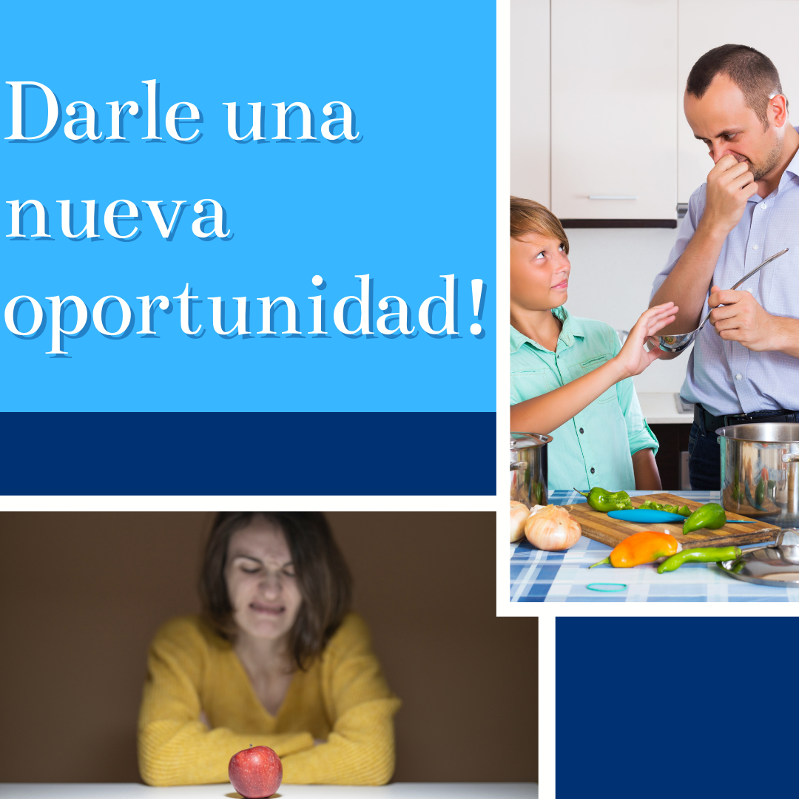

Los hábitos de vida saludables son estilos de vida, de comportamiento, de los cuales los más conocidos son los que tienen que ver con la alimentación, la higiene, la actividad física, la protección, los hábitos tóxicos… pero hay muchos otros que tienen que ver con actitudes básicas necesarias para la salud mental.
Publicado hace 2 días
HAMBRE FÍSICA vs HAMBRE EMOCIONAL
En algunas personas comer emocionalmente puede ser un problema real, al provocar aumento severo de peso o ciclos de atracones.
El problema de comer emocionalmente es que, en cuanto acaba el placer de comer, las emociones que lo desencadenan permanecen. Y a menudo te sientes peor por haberte comido la cantidad o el tipo de alimento que has ingerido. Esa sensación de culpa es muy fea , y lo peor es que no registras nada durante el acto , casi que tampoco lo disfrutas. Y es un vacío que no tiene límite.. va si, el límite es hasta que se termine todo lo que está frente a mis ojos!
-Por eso ayuda tanto conocer las diferencias entre el hambre física y el hambre puramente emocional.
-Hambre física:
* aparece gradualmente y se puede “postergar” si escuchaste bien se pude postergar!
* se puede satisfacer con cualquier comida.
* puedes dejar de comer cuando te sientes satisfecho. Por más que tú plato sea muy grande.
* El punto más importante no causa sentimientos de culpa, ni reflexión !
-Hambre emocional:
* sientes una necesidad urgente de comer.
* causa un deseo de comer algo en especial (por ejemplo, pizza o helado)
* comes más de lo normal.
* causa un sentimiento de culpa al terminar de comer.
-Controlar la conducta de comer para manejar tus emociones implica encontrar otras formas de afrontar las situaciones y emociones que hacen que una persona se refugie en los alimentos.
Por ejemplo, ¿eres de los que llegan a casa por las tardes y automáticamente se dirigen a la cocina? Detenete y pregúntate: "¿tengo realmente hambre?" ¿Notas los típicos ruiditos del hambre en el estómago? ¿Te cuesta concentrarte o estás irritable? Si estos signos apuntan al hambre, elige algo ligero y saludable para matar esa ansiedad hasta la hora de cenar.
Revisar las cosas que te han ocurrido ese día es un gran punto de partida! Admite cómo te han hecho sentir: ¿contento?, ¿agradecido?, ¿entusiasmado?, ¿enfadado?, ¿preocupado?, ¿celoso?, ¿excluido?.
ARTICULOS MAS ANTIGUOS:
Publicado hace 4 días
LA IMPORTANCIA DE LA VITAMINA C
♨️Cada célula en nuestro cumple funciones distintas, para que ellas funcionen adecuadamente, no se enfermen ni envejezcan de forma acelerada, necesitan entre varios sustratos gran cantidad de antioxidantes. De lo contrario, las células se oxidan, se inflaman y se degeneran más rápido, lo que puede desencadenar una serie de enfermedades crónicas y degenerativas.
La Vitamina C, es un potente antioxidante, participa en más de 200 reacciones enzimáticas del cuerpo, protege a las células y sus componentes del daño oxidativo y estrés celular, amortigua el efecto de los radicales libres, de las toxinas y agentes contaminantes. La vitamina C evita que la célula se deteriore tan rápido y favorece la producción de energía de mejor calidad.
♨️Es necesaria para fabricar colágeno, componente crucial de las arterias, articulaciones, cartílagos y piel, sanar heridas y formar tejido cicatrizal, favorece la absorción del hierro.
Ayuda a sintetizar L-carnitina, vital para transportar las grasas dentro de las mitocondria para ser utilizadas como energía (si aún no lo leíste: recomiendo leer el post sobre mitocondrias).
Modula procesos inflamatorios como rinitis, alergias, asma.
Interviene en la formación de Serotonina y Tirosina.
Tiene un efecto cardio y neuroprotector ya que evita la oxidación de LDL colesterol.
Durante los periodos de Stress el Cortisol se encuentra elevado y nuestro cuerpo consume mayor cantidad de Vitamina C, de ahí también radica la importancia de sumplementarla por su intervención en las etapas de Stress agudo y crónico.
♨️Fuentes de Vit.C:
Cítricos, Frutillas, Kiwi, tomate, repollo, coliflor, brócoli, pimientos.
Si bien la alimentación es un eje clave e irremplazable en el camino de estar saludables, los alimentos sólo cubren la DDR (dosis diaria recomendada) que es la dosis mínima para no padecer o caer en la enfermedad ¨escorbuto¨, por lo cual los beneficios de la Vitamina C son complicados de alcanzar (imaginen que necesitaríamos consumir 500 limones por día) y como no la producimos ni almacenamos, si le sumamos malos hábitos nutricionales, que desencadenan un intestino permeable lo cual no permite una absorción óptima de nutrientes.
Publicado hace 1 semana
OPORTUNIDAD PARA LOS ALIMENTOS SANOS

Todo el tiempo escuchamos que a la hora de hacer un cambio a nuestros hábitos diarios, hay un gran conflicto con la comida.
La primera respuesta que uno escucha es:
.
🔴“No quiero comer esto”
🔴“Tampoco esto”
🔴 "Mucho menos esto otro”.
.
🧐Por lo General el problema empieza con Padres que dicen “Comé”, y automáticamente sigue con chicos que dicen “No quiero, no me gusta”, y sigue con Padres que, emplean un arma de doble filo... esa pregunta tan conocida “¿Cómo sabés que no te gusta si nunca lo probaste?”
El chico prueba el alimento 🥘 y sigue sin gustarle, entonces , ya abatidos los padres terminan cediendo y optan por no volver a dar ese alimento.😔
Si a esto le sumamos que cuando se portan bien el premio es : dulces / salidas a Mc donals/ galletas/ frituras, etc. Obviamente ese paladar en un futuro va a ser muy difícil de hackear.
🤨En la adolescencia y en la vida adulta hackear nuestro sistema es un trabajo duro, pero no imposible. El primer punto que trabajaría sería la “repetición” Y la “variedad".
Dale un mínimo de 7 intentos. Nunca te paso que antes no comías algo y con el paso de los años te encanta ?
Hay que estimular más seguido esas ventanas de sabores.
Un gran primer paso es Cambiarle el gusto a las cosas, juga / experimenta y equivócate. Un día, le ponés un poco de orégano, otro un cuarto de hoja de albahaca; otro día una pizca de vainilla en rama o de canela.
Pero dale una nueva oportunidad !
✅Consejos:
🔔Poca sal y poca azúcar (y si podés sacarla toda es mucho mejor)
🔔Combiná texturas parecidas aunque tengan diferentes sabores como el zapallo con remolacha. Palta con banana.
🔔Experimenta cocciones diferentes:
Juga con la textura, los sonidos, olores, temperaturas. Un puré frío puede ser algo raro para muchos pero con una buena combinación puede dar en la tecla.
🔔 limpia tu paladar, No lo tapes: Para eso intenta tomar agua.
Ósea si queres cambiar imponente que se Agua y se acabó. Punto final. No negociamos con el jugo light / gaseosa sin azucar, es Agua !!! Y en el
Último caso podes utilizar los tips ej: agua de pepino, o saborizarla con alguna fruta... pero es mejor comer la fruta !
CURSOS
Curso de Elaboracion de Helados saludables
Hacer helados caseros saludables es la forma mas sana de disfrutar en un día caluroso,y a su vez ingerir una buena cantidad de nutrientes. Son fáciles y rápidos de hacer, muy económicos y fantásticos para personas que no consumen frutas. Además son helados sin azúcar, ni lactosa, aptos para diabéticos y celiacos.
La biomecánica es la ciencia que estudia el movimiento y actividades de los seres vivos en diferentes situaciones, junto a la componente mecánica y la energía incluidas en ellas, es decir, la relación que existe entre fuerza y movimiento en los seres vivos.
Este curso apunta a difundir y dar a conocer los contenidos de la Ley Nacional de Salud Mental, una innovadora legislación que incorpora la perspectiva de derechos humanos y un cambio de paradigma tanto para las políticas públicas como para las prácticas sanitarias. La capacitación contribuye en la formación de agentes técnicos, profesionales, efectores, al igual que a usuarios y familiares de los servicios de salud mental con el propósito de desarrollar competencias para la implementación de prácticas acordes a esta ley pionera en la región.


.png)